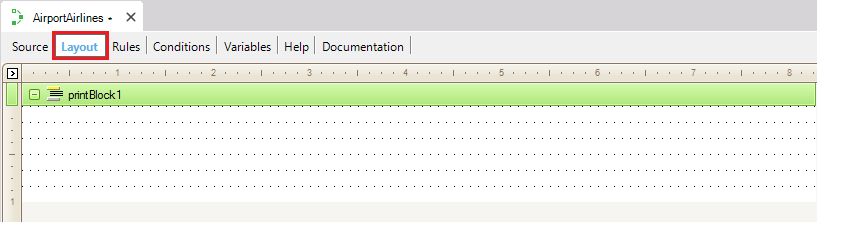
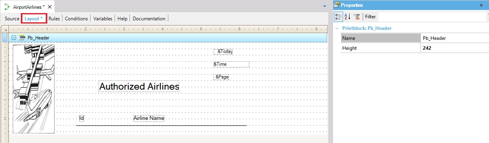
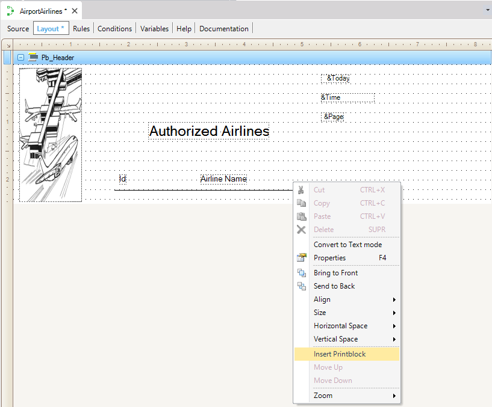
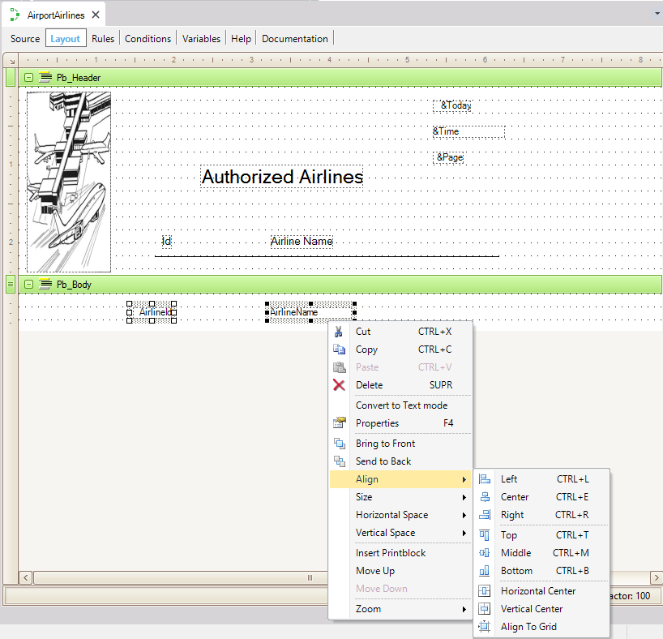
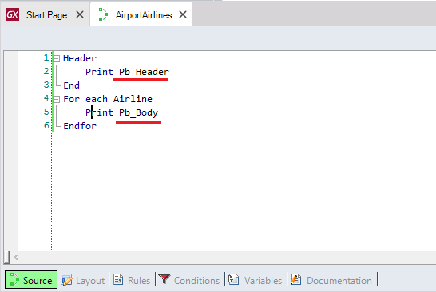

Procedure Layout
If you need to generate a visual output in a Procedure object, you have to access to the Procedure Layout section in order to define the data to be listed and the output format.  By default, the Layout section contains a first printblock (named: printBlock1), which is empty and ready to be used. Inside it, you can include whatever you want to show. Suppose you have to define a procedure in order to list all the airlines a Travel Agency works with. Since the procedure Layout is composed by one or several printblocks (that do not necessarily have to respond to the same order as required for the output), each printblock must have one single name to be referenced from the Procedure Source (by using the Print command). In the example, the first printblock will contain a logo, a title, the current day and hour, the page number, labels with titles and a line. So, insert those controls inside the printblock and rename it as "Pb_Header" (by modifying the printblock Name property).  Observe the elements that were added to the "Pb_Header" printblock. Most of the actions were achieved through drag&drop from the available Toolbox for this section:
and by setting the controls properties. In particular to insert the logo, the Image icon has to be dragged from the Toolbox to the printblock and a dialog is opened offering you some possibilities, such as import the image from a file. The system variables such as &Date, &Time and &Page, can be inserted by selecting: Insert > Variable... from the Menubar or by dragging and dropping the Attribute/Variable control from the Toolbox. Inserting PrintblocksInserting printblocks is very simple. To do so, you have to right-click on a specific printblock and select from the context menu the Insert Printblock option. This action will insert a new printblock below it.  Look at the following figure. The second printblock has been inserted in the Layout section and the AirlineId and AirlineName attributes have been added to it.
To change a printblock's position, the context menu offers the Move Up and Move Down options. Aligning and Resizing ControlsTo align several controls at once (or to make them the same size), select them by holding down the Ctrl (or Shift) key and clicking on the desired controls. The last one (which will have its selection nodes highlighted in bold) will be the reference control for the action. Then, you only have to right-click and select from the context menu the option you are needing.  Inserting a variable based on an SDTYou can also insert in any printblock a variable that is based on a Structured Data Type. The options to insert it in the printblock are the same as for any variable. A dialog will be opened so that you can select which members you want to include in the printblock. One control for each member will be inserted and their FieldSpecifier property (which is mandatory) is for setting the collection position to be shown. Invoking the PrintblocksRemember the procedure logic is written in the Procedure Source and from there, the Printblocks defined in the Procedure Layout must be invoked using the Print Command:  Note that:
|